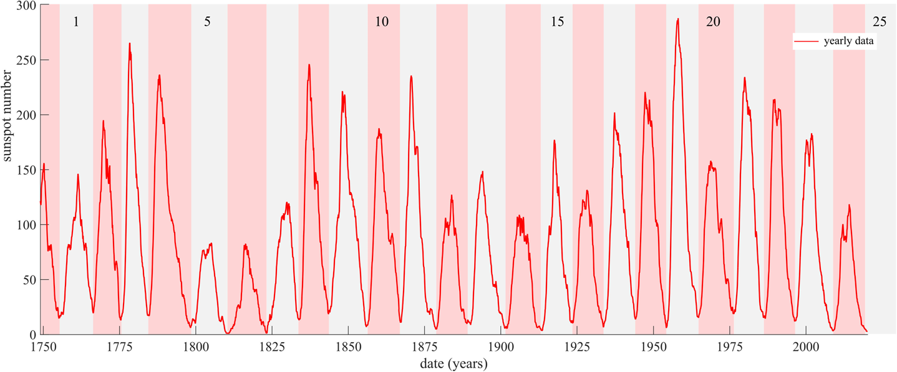

Series Temporales
Definición
Una serie temporal es una variable medida secuencialmente en el tiempo a intervalos equi-espaciados.
La representaremos por, \[\{y_t\}_{t=1}^T=\{y_1,y_2,\ldots,y_T\}.\]
La serie aparece indexada por su fechado \(t\) y el sub-índice \(T\) hará siempre referencia a la fecha del último dato.
El fechado varía en su frecuencia, que puede ser anual (baja frecuencia), trimestral, mensual, semanal, diario (alta frecuencia) o disponer casi de un continuo de datos.
En este curso aprenderemos a ajustar modelos a series temporales para su posterior análisis y predicción.
Proceso generador de datos
El proceso generador de los datos de una serie temporal es en general desconocido, pero se puede aproximar por un modelo estadístico. Estos modelos se pueden clasificar en tres grandes grupos según su naturaleza.
En ocasiones las series temporales pueden ser modeladas de forma determinista ajustando los datos a funciones matemáticas: \[y_t=f(t)+\varepsilon_t.\]
En los procesos estocásticos las observaciones cercanas en el tiempo tienden a estar (cor)relacionadas y se puede aprovechar esta dependencia para entender la serie y predecirla: \[y_t=f(y_{t-1},y_{t-2},\ldots)+\varepsilon_t.\]
A veces, ambas situaciones se dan simultáneamente: \[y_t=f(t,y_{t-1},y_{t-2},\ldots)+\varepsilon_t.\]
La figura 1 muestra un ejemplo gráfico de estos tres procesos generadores.

En este curso se asumirá en todo momento que la serie temporal tiene una componente estocástica.
Lectura de datos y representación gráfica
Antes de continuar vamos a importar en R dos de las series que usaremos de ejemplo en este tema: número de títulos (libros y folletos) publicados anualmente en España, los nacimientos mensuales en España y la demanda eléctrica diaria (MWh) en España. Servirán de ejemplo para el análisis de series con diferente fechado, anual, mensual y diario, respectivamente.
Títulos publicados en España
Libros es una serie anual de 1993 a 2018 (fuente Instituto Nacional de Estadística). Los datos están disponibles en el fichero libros.csv. La primera columna tiene el año de la serie y la segunda contiene el número de títulos publicados. En la primera fila aparece el nombre de cada columna.
libros <- read.csv2("./series/libros.csv", header = TRUE)
libros <- ts(libros[, 2], start = 1993, frequency = 1)
Usamos para leer los datos read.csv2, indicando que la primera línea tiene el nombre de las variables. Esta función asume que el separador decimal es la coma “,” y que el separador entre variables es el punto y coma “;”. Si el separador decimal es el punto “.” y el separador de variables es la coma “,”, debes usar read.csv. En cualquiera de estas funciones, puedes modificar el separador decimal por medio del argumento dec; también puedes usar el argumento sep para indicar el carácter usado como separador de variables.
La función ts, de la librería stats, convierte un objeto (vector o matriz) a la clase serie temporal.
- Con
start indicamos el fechado del primer dato.
- Con
frequency indicamos la frecuencia, que en este caso es un dato por año.
Usa help(ts) para obtener más información y str(libros) para ver qué contiene un objeto serie temporal.
Podemos dibujar la serie Libros con la función plot o mejor con autoplot. Esta última está en el paquete forecast.
En general, las funciones gráficas que vamos a usar pertenecen a la libraría forecast, pero en ocasiones las ampliaremos con funciones de la librería ggplot2. Te recomiendo cargar estas dos librerías desde el inicio. En casi todos los casos existe una versión de la función gráfica usada en la librería stats. Además, usaremos las librerías grid y gridExtra para combinar un conjunto de gráficas en una misma figura.
library(forecast)
library(ggplot2)
library(gridExtra)
library(grid)
autoplot(libros,
xlab = "",
ylab = "Títulos",
main = "Figura 2. Títulos publicados (libros y folletos)")

Nacimientos en España
Nacimientos es una serie mensual de enero de 1975 a diciembre de 2018 (fuente: Instituto Nacional de Estadística). Los datos están disponibles en el fichero nacimientos.csv. La primera columna tiene la fecha y la segunda la serie propiamente. En la primera fila aparece el nombre de cada columna.
nacimientos <- read.csv2("./series/nacimientos.csv", header = TRUE)
nacimientos <- ts(nacimientos[, 2],
start = c(1975, 1),
frequency = 12)
En este caso:
- Con
start indicamos que el primer dato es enero de 1975. También sería correcto start = 1975. Si el primer dato fuera, por ejemplo, marzo de 1975, deberíamos poner start = c(1975, 3) o start = 1975 + 2/12.
- Con
frequency indicamos que se tienen 12 datos (meses) por año. Si la serie fuera trimestral pondríamos frequency = 4.
autoplot(nacimientos,
xlab = "",
ylab = "Nacimientos",
main = "Figura 3. Nacimientos mensuales")

Demanda eléctrica
Electricidad es una serie diaria desde el 1 enero de 2019 hasta el 31 diciembre de 2019 (fuente: Red Electrica de España). Los datos están disponibles en el fichero Consumo electrico.csv. La primera columna tiene la fecha y la segunda, la seleccionada para el fechado, la serie propiamente. En la primera fila aparece el nombre de cada columna.
electricidad <- read.csv2("./series/Consumo electrico.csv", header = TRUE)
electricidad <- ts(electricidad[, 2],
start = c(1, 2),
frequency = 7)
En este caso:
- Con
start indicamos que el primer dato es un martes (segundo día de la semana) de la primera semana. Como ves no hay referencia al año. También sería correcto start = 1 + 1/7.
- Con
frequency indicamos que se tienen 7 datos (días) por semana. Si la serie fuera de lunes a viernes pondríamos frequency = 5.
autoplot(electricidad,
xlab = "",
ylab = "MWh",
main = "Figura 4. Consumo diario de electricidad")

start, da el fechado del primer dato
[1] 1975 1
[1] 1 2
end, da el fechado del último dato
[1] 2018 12
[1] 53 2
frequency, da la frecuencia de los datos
[1] 12
[1] 7
time, crea un vector con el fechado de una serie. Observa como guarda internamente R el fechado de una serie temporal.
head(time(nacimientos), n = 48) #Mostramos sólo los 4 primeros años
Jan Feb Mar Apr May Jun Jul Aug
1975 1975.000 1975.083 1975.167 1975.250 1975.333 1975.417 1975.500 1975.583
1976 1976.000 1976.083 1976.167 1976.250 1976.333 1976.417 1976.500 1976.583
1977 1977.000 1977.083 1977.167 1977.250 1977.333 1977.417 1977.500 1977.583
1978 1978.000 1978.083 1978.167 1978.250 1978.333 1978.417 1978.500 1978.583
Sep Oct Nov Dec
1975 1975.667 1975.750 1975.833 1975.917
1976 1976.667 1976.750 1976.833 1976.917
1977 1977.667 1977.750 1977.833 1977.917
1978 1978.667 1978.750 1978.833 1978.917
head(time(electricidad), n = 28) #Mostramos sólo las 4 primeras semanas
Time Series:
Start = c(1, 2)
End = c(5, 1)
Frequency = 7
[1] 1.142857 1.285714 1.428571 1.571429 1.714286 1.857143 2.000000 2.142857
[9] 2.285714 2.428571 2.571429 2.714286 2.857143 3.000000 3.142857 3.285714
[17] 3.428571 3.571429 3.714286 3.857143 4.000000 4.142857 4.285714 4.428571
[25] 4.571429 4.714286 4.857143 5.000000
cycle, crea un vector con el periodo estacional de cada dato de la serie. Para una serie mensual son valores de 1 a 12, para una serie diaria serían valores de 1 a 7
head(cycle(nacimientos), n = 48) #Mostramos sólo los 4 primeros años
Jan Feb Mar Apr May Jun Jul Aug Sep Oct Nov Dec
1975 1 2 3 4 5 6 7 8 9 10 11 12
1976 1 2 3 4 5 6 7 8 9 10 11 12
1977 1 2 3 4 5 6 7 8 9 10 11 12
1978 1 2 3 4 5 6 7 8 9 10 11 12
head(cycle(electricidad), n = 28) #Mostramos sólo las 4 primeras semanas
Time Series:
Start = c(1, 2)
End = c(5, 1)
Frequency = 7
[1] 2 3 4 5 6 7 1 2 3 4 5 6 7 1 2 3 4 5 6 7 1 2 3 4 5 6 7 1
Componentes de una serie temporal y su combinación
Tendencia, \(T_t\)
Definición: la tendencia de una serie es su comportamiento a largo plazo. Describe los cambios sistemáticos de la serie temporal que no aparentan ser periódicos.
Respecto a la dirección del movimiento la tendencia puede ser:
- Creciente: a largo plazo la serie aumenta su valor
- Decreciente: a largo plazo la serie disminuye su valor
- Estacionaria: a largo plazo la serie mantiene su valor
Respecto a la pendiente la tendencia puede ser:
- Lineal: la variación entre periodos es constante
- Exponencial: la variación entre periodos es creciente
- Logarítmica: la variación entre periodos es decreciente
Respecto del proceso generador de la tendencia, puede ser:
- Determinista: \(T_t = f(t)\)
- Estocástica: \(T_t = f(T_{t-1}, T_{t-2},\ldots)\)
- Ambas: \(T_t = f(t,T_{t-1}, T_{t-2},\ldots)\)
En la figura 5 se muestran ejemplos de series temporales según dirección del movimiento y pendiente de la tendencia. Recuerda que en la figura 1 se mostraban ejemplos de series temporales según su proceso generador.

Si la serie temporal es suficientemente larga es posible observar cambios en la dirección del movimiento de la tendencia que definen los ciclos.
Ciclo, \(C_t\)
Definición: Son patrones sin periodicidad fija que abarcan varios años.
Por ejemplo, los ciclos económicos, los cambios climáticos asociados al fenómeno El Niño, o las manchas solares.

La serie de Nacimientos es lo suficientemente larga como para observarse un ciclo completo, que queda identificado por dos cambios de tendencia consecutivos de signo opuesto:
- A finales de la década de los 90 la tendencia decreciente en los nacimientos pasa a creciente por la llegada de inmigrantes con una mayor tasa de natalidad.
- A finales de la primera década del 2000 la tendencia creciente pasa a decreciente porque la crisis provoca el regreso a sus países de origen de muchos de estos inmigrantes.
De esta forma, observamos un ciclo completo desde 1975 hasta poco antes de 2010 (periodo entre dos cambios de tendencia), y el inicio del siguiente ciclo en el que aún estamos.

Estacionalidad, \(S_t\)
Definición: Son patrones repetitivos de periodicidad fija e inferior al año.
El orden de la periodicidad lo denominaremos \(m\), por tanto el patrón estacional se repite cada \(m\) periodos. Lógicamente, \(m\) toma el valor 12 para datos mensuales, el valor 4 para datos trimestrales, 7 para datos diarios (de lunes a domingo), etc.
La componente estacional surge por factores climatológicos, institucionales o sociales.
En ocasiones no es fácil determinar la existencia de estacionalidad o su orden. En este caso, se puede usar el análisis espectral, que no veremos en este curso, para analizar esta componente. La librería forecast dispone de la función findfrequency que devuelve la frecuencia dominante de una serie usando el análisis espectral.
La serie Nacimientos tiene una estacionalidad de orden 12, causada principalmente por el número de días del mes. Los valles en la figura 8 corresponden a febrero, que por tener 28 días (o 29 en años bisiestos) presenta menor número de nacimientos.

La figura 9 muestra la demanda eléctrica diariamente para cuatro semanas, desde el lunes 3 de febrero hasta el domingo 2 de marzo. Tiene, por tanto, una estacionalidad de orden 7. En el eje OX aparecen los lunes de cada semana y permiten identificar el domingo como el día de menor demanda, seguido del sábado.

Si el fechado de la serie es de muy alta frecuencia, puede ocurrir que se superponga más de una componente estacional. La siguiente serie corresponde a la demanda eléctrica (MW) recogida cada hora para el mes de febrero. El eje OX señala el consumo la primera hora de cada día del mes (desde media noche hasta la una de la madrugada). Se aprecia una estacionalidad diaria de orden \(24\), otra semanal de orden \(7 \times 24\) y si mostráramos varios años de consumo también se observaría otra mensual.

Intervención, \(I_t\)
Definición: Es un factor sistemático no periódico o irregular, que vendría determinado por fenómenos ocasionales que provocan observaciones anómalas y valores atípicos en la serie temporal.
Por su relación con fechas concretas, podemos distinguir dos tipos:
- Efectos calendario: festivos en series diarias; Semana Santa, días laborales y febrero bisiesto en series mensuales.
- Otros efectos no sujetos a calendario: catástrofes, huelgas, etc.
En la serie Nacimientos, los meses de febrero bisiestos (puntos rojos) presentan un número de nacimientos mayor que los meses de febrero no bisiestos. Para algunos años este hecho es mas claro (véase figura 11).

En la serie diaria Electricidad cuando un día entre semana es festivo, el consumo se reduce notablemente apareciendo un efecto calendario. Si se trata de un día aislado, el efecto es muy fácil de identificar y analizar. Un ejemplo, observable en la figura 12, es el viernes 1 de noviembre de 2019, día de Todos los Santos, identificado con un punto rojo. Se aprecia que el consumo fue muy inferior al observado el viernes precedente y posterior (puntos verdes). Si los festivos abarcan varios días, el efecto sigue siendo perfectamente identificable, pero es más complejo de analizar. Un ejemplo es la última semana de diciembre donde el consumo es muy inferior al observado en las semanas previas debido, por un lado, al efecto del día festivo de Navidad (punto azul) y, por otro lado, al periodo semi-vacacional que estas festividades supone en España.

Por su naturaleza, podemos distinguir tres tipos básicos de intervención (aunque hay más):
- Pulso (Additive Outlier): En un periodo aislado la serie toma un valor anómalo. Por ejemplo, un día el cajero automático no funciona y la extracción de dinero es nula. Véase figura 13, panel derecho.
- Cambio transitorio (Transitory Change): En un periodo un shock genera un valor anómalo en la serie y el efecto del shock va desapareciendo poco a poco. Por ejemplo, un brote infeccioso aumenta el número de muertes en una población, pero al tomarse medidas sanitarias las muertes vuelven poco a poco al nivel previo al brote. Véase figura 13, panel central.
- Cambio permanente (Level Shift): En un periodo la serie cambia de nivel y permanece de forma permanente en este nuevo nivel. Por ejemplo, enfrente de una tienda abre la competencia, de forma que sus ventas descienden bruscamente de forma permanente. Véase figura 13, panel izquierdo.

Residuo, \(R_t\)
Definición: No presenta un comportamiento sistemático a corto, medio o largo plazo por lo que no se puede predecir de modo alguno. Es la parte de la serie que se debe a puro azar.
Aunque inicialmente no se hará ningún supuesto sobre el residuo, se espera que sea ruido blanco (media cero, incorrelado y homocedástico), es decir \(R_t \sim iid(0, \sigma^2\)).
Esquema aditivo y multiplicativo
Una serie temporal siempre tiene tendencia y residuo. La presencia de estacionalidad, ciclo e intervención depende de la naturaleza de la serie. Por ejemplo, una serie anual no tendrá nunca estacionalidad y en una serie corta no se podrá observar el ciclo.
Las componentes de una serie temporal se pueden combinar de múltiples formas.
En el esquema aditivo cada componente suma su efecto sobre las demás, \(y_t = T_t + S_t + C_t + I_t + R_t\). La demanda diaria de electricidad es un ejemplo de este tipo de esquema (figura 14). El gráfico superior muestra la serie en el tiempo e identificamos el esquema aditivo porque la amplitud estacional (para cada semana la diferencia entre el día de más consumo y el de menos consumo) se mantiene constante en el tiempo. En el gráfico inferior cada punto corresponde a una semana donde la coordenada X es el consumo de esa semana y la coordenada Y la desviación típica del consumo para los días de esa semana. Este segundo gráfico revela el esquema aditivo de la serie porque no se observa un patrón creciente en los puntos: más consumo no implica una mayor desviación típica.

En el esquema multiplicativo cada componente supone un incremento porcentual respecto de las demás, \(y_t = T_t \cdot S_t \cdot C_t \cdot I_t \cdot R_t\). La serie Nacimientos es un ejemplo de esquema multiplicativo: en el gráfico superior de la figura 15, que muestra la serie, se observa que según decrece el número de nacimientos, también decrece la amplitud estacional. Además, en el gráfico inferior se observa un patrón creciente en los puntos, revelando el esquema multiplicativo de la serie.

Si una serie presenta un esquema multiplicativo, su logaritmo lo presentará aditivo. A lo largo del curso se verán otras razones por las que puede ser aconsejable analizar el logaritmo de una serie temporal.
En principio, cualquier combinación entre las componentes es posible (véase Tema 5):
- \(y_t = (T_t + C_t) \cdot S_t + I_t + R_t\)
- \(y_t = (T_t + S_t + C_t + I_t)R_t\)
- \(y_t = T_t \cdot S_t \cdot C_t \cdot I_t + R_t\)
- …
Descomposición de una serie
Concepto
Los métodos que hemos visto para la descripción de la tendencia y la componente estacional son muy sencillos, pero no son ni rigurosos ni precisos. Veamos métodos más adecuados para extraer de una serie sus componentes: tendencia-ciclo, estacionalidad, e intervención-residuo.
Si la serie es demasiado corta para poder extraer el ciclo, entonces el ciclo queda recogido dentro de la tendencia. Por otro lado, las técnicas de identificación de la intervención son complejas por lo que esta componente queda incorporada al residuo. Por tanto, asumiremos que una serie tiene sólo Tendencia, Estacionalidad y Residuo:
- Esquema aditivo \(y_t = T_t + C_t + S_t + I_t + R_t = (T_t + C_t) + S_t +(I_t + R_t) = T'_t + S_t + R'_t\)
- Esquema multiplicativo \(y_t = T_t \cdot C_t \cdot S_t \cdot I_t \cdot R_t = (T_t \cdot C_t) \cdot S_t \cdot (I_t \cdot R_t) = T'_t \cdot S_t \cdot R'_t\)
Veremos a continuación como extraer estas tres componentes a partir de una serie original. Este proceso se denomina descomposición.
Hay múltiples formas de realizar una descomposición. Aquí veremos dos de ellas, la más sencilla, basada en el concepto de medias móviles (decompose), y otra más versátil y compleja a partir de regresiones locales ponderadas (stl).
Además, R proporciona el método de descomposición que utiliza el US Census Bureau and Statistics Canada, denominado X11, y el método que utiliza el Banco de España, denominado SEATS (Seasonal Extraction in ARIMA Time Series), aunque estos métodos solo son válidos para series mensuales y trimestrales.
En origen los métodos de descomposición no sirven para realizar predicciones, pero actualmente se usan también con este fin (véase las funciones stlm y stlf del paquete forecast).
Descomposición por medias móviles
Ideas generales
La función decompose estima las componentes de tendencia y estacionalidad usando el método de medias móviles. En concreto decompose sigue los siguientes pasos para obtener cada componente:
Paso 1: Se estima la tendencia de una serie a partir de una media móvil centrada. Si el orden estacional es par, la media móvil es ponderada de orden \(m + 1\); y si el orden estacional es impar, la media móvil es de orden \(m\). En concreto,
- Si \(m=2k\): \(\hat{T}_t = \frac{\frac{1}{2}y_{t-k} + y_{t-k+1} + \ldots + y_t + \ldots + y_{t+k-1} + \frac{1}{2} y_{t+k}}{m}\),
- Si \(m=2k+1\): \(\hat{T}_t = \frac{y_{t-k} + y_{t-k+1} + \ldots + y_t + \ldots + y_{t+k-1} + y_{t+k}}{m}\).
Paso 2: Para un modelo con esquema aditivo calculamos la serie sin tendencia como \(y_t - \hat{T}_t\) y para un esquema multiplicativo como \(y_t/ \hat{T}_t\).
Paso 3: Para estimar la componente estacional para cada periodo estacional, calculamos el valor medio de la serie sin tendencia (paso 2) de forma independiente para los datos de cada estación. Así, obtenemos un vector con la estimación de las \(m\) componentes estacionales.
Después estos valores se ajustan para que sumen 0 (esquema aditivo) o para que sumen \(m\) (esquema multiplicativo). La componente estacional se obtiene repitiendo el vector de \(m\) componentes ajustadas hasta alcanzar la longitud de la serie original. Esto da \(\hat{S}_t\)
Paso 4: El residuo se obtiene como \(\hat{R}_t = y_t - \hat{T}_t - \hat{S}_t\) (esquema aditivo) o \(\hat{R}_t = y_t / (\hat{T}_t \cdot \hat{S}_t)\) (esquema multiplicativo)
La siguiente tabla muestra un ejemplo de descomposición aditiva por medias móviles para una serie simulada de orden estacional 5.
- La dos primeras columnas indican la estación de cada dato y el valor de la serie, para un total de 25 datos. La columna Ten ha sido obtenida siguiendo el paso 1 como una media móvil de orden 5: \[Ten_t = (Serie_{t-2} + Serie_{t-1} + Serie_{t} + Serie_{t+1} + Serie_{t+2})/5.\]
- La serie sin tendencia, columna Est + Res, se obtiene restando a la columna Serie la columna Ten, tal y como se indica en el paso 2.
- Para el cálculo de la columna Est, que repite de forma periódica la primera estimación de las 5 componentes estacionales, se sigue el paso 3. Para cada estación se promedian los valores de la columna Est + Res correspondientes a dicha estación. La suma de los cinco valores de la componente estacional así obtenidos vale 1.1.
- Para ajustar la componente estacional para que sume 0 a cada valor de la componente estacional se le resta su suma actual, 1.1, dividida por 5, el número de estaciones. El resultado de este ajuste aparece en la columna Est corregida que será la componente estacional final.
- Siguiendo el paso 4, la columna Res se calcula restando a la serie original (columna Serie) la suma de la tendencia y la estacionalidad (columnas Ten y Est corregida).
Observa que en el proceso de descomposición se han perdido 4 datos para la tendencia y el residuo, dos al inicio de la serie y dos al final.
| 1 |
17.00 |
NA |
NA |
9.14 |
8.92 |
NA |
| 2 |
6.72 |
NA |
NA |
-10.89 |
-11.11 |
NA |
| 3 |
5.08 |
20.62 |
-15.54 |
-10.06 |
-10.28 |
-5.26 |
| 4 |
8.79 |
27.89 |
-19.10 |
-9.46 |
-9.68 |
-9.42 |
| 5 |
65.53 |
28.00 |
37.53 |
22.37 |
22.15 |
15.38 |
| 1 |
53.31 |
28.58 |
24.73 |
9.14 |
8.92 |
15.81 |
| 2 |
7.28 |
29.79 |
-22.51 |
-10.89 |
-11.11 |
-11.40 |
| 3 |
8.00 |
25.62 |
-17.62 |
-10.06 |
-10.28 |
-7.34 |
| 4 |
14.84 |
19.13 |
-4.29 |
-9.46 |
-9.68 |
5.39 |
| 5 |
44.67 |
20.08 |
24.59 |
22.37 |
22.15 |
2.44 |
| 1 |
20.85 |
21.78 |
-0.93 |
9.14 |
8.92 |
-9.85 |
| 2 |
12.02 |
21.64 |
-9.62 |
-10.89 |
-11.11 |
1.49 |
| 3 |
16.51 |
18.97 |
-2.46 |
-10.06 |
-10.28 |
7.82 |
| 4 |
14.14 |
22.07 |
-7.93 |
-9.46 |
-9.68 |
1.75 |
| 5 |
31.31 |
23.08 |
8.23 |
22.37 |
22.15 |
-13.92 |
| 1 |
36.37 |
24.68 |
11.69 |
9.14 |
8.92 |
2.77 |
| 2 |
17.06 |
26.66 |
-9.60 |
-10.89 |
-11.11 |
1.51 |
| 3 |
24.53 |
30.92 |
-6.39 |
-10.06 |
-10.28 |
3.89 |
| 4 |
24.02 |
30.56 |
-6.54 |
-9.46 |
-9.68 |
3.14 |
| 5 |
52.62 |
33.48 |
19.14 |
22.37 |
22.15 |
-3.01 |
| 1 |
34.59 |
33.51 |
1.08 |
9.14 |
8.92 |
-7.84 |
| 2 |
31.66 |
33.51 |
-1.85 |
-10.89 |
-11.11 |
9.26 |
| 3 |
24.65 |
32.95 |
-8.30 |
-10.06 |
-10.28 |
1.98 |
| 4 |
24.01 |
NA |
NA |
-9.46 |
-9.68 |
NA |
| 5 |
49.86 |
NA |
NA |
22.37 |
22.15 |
NA |
Los principales inconvenientes de este método de descomposición son que se perderán datos al inicio y final de la serie –por ejemplo, si la serie es mensual se perderán seis datos al inicio y seis al final–, y que asume que la componente estacional no ha variado en el tiempo. Sin embargo, sabemos que para muchas series sociales y de consumo la componente estacional se ha suavizando con el tiempo.
Por el contrario, una se las ventajas de este método, además de su sencillez de cálculo, es que se puede usar tanto para esquemas aditivos (type="addi") como multiplicativos (type="multi").
La función decompose genera un objeto con las siguientes componentes:
$x para la serie original,$trend para la tendencia,$seasonal para la estacionalidad,$random para el residuo, y$figure que contiene las estimaciones de los m efectos estacionales ajustados. Es una extracción para un único año o semana de $seasonal.
Siempre que generes nuevos objetos en R a partir de funciones te recomiendo que con names y str mires que hay en su interior.
En los métodos de descomposición que vamos a ver, para obtener las componentes individualmente puedes usar la función seasonal para la componente estacional, trendcycle para el componente de tendencia, y remainder para el residuo.
Ejemplo de esquema aditivo
Vamos a descomponer la serie Electricidad asumiendo un esquema aditivo (type = "addi).
eleDesAdi <- decompose(electricidad, type = "addi")
autoplot(eleDesAdi,
xlab = "",
main = "Figura 20. Descomposición aditiva de Electricidad por medias móviles")

Es fácil verificar que si se suma para cada fecha la tendencia, la estacionalidad y el residuo se obtiene exactamente el valor de la serie:
tmp <- trendcycle(eleDesAdi) + seasonal(eleDesAdi) + remainder(eleDesAdi)
summary(electricidad - tmp)
Min. 1st Qu. Median Mean 3rd Qu. Max. NA's
0 0 0 0 0 0 6
A continuación, tienes un ejemplo del manejo de las componentes extraídas para hacer una gráfica.
autoplot(electricidad, series="Demanda eléctrica",
xlab = "",
ylab = "MWh",
main = "Figura 21. Demanda eléctrica: serie y tendencia") +
autolayer(trendcycle(eleDesAdi), series="Tendencia") +
scale_colour_manual(values=c("Demanda eléctrica"="black","Tendencia"="red"),
breaks=c("Demanda eléctrica","Tendencia"))

También podemos ver las componentes estacionales y verificar que suman 0. Ojo, como la serie empieza un martes, la primera componente que se muestra es la del martes y la última la del lunes.
[1] 31.68965 30.79475 32.66500 26.84461 -44.91714 -90.44703 13.37017
[1] 0.000000000000005329071
Por último, podemos realizar una gráfica de la componente estacional.
compEstacional <- eleDesAdi$figure[c(7, 1:6)]
ggplot() +
geom_line(aes(x = 1:7, y = compEstacional)) +
geom_hline(yintercept = 0, colour = "blue", lty = 2) +
ggtitle("Figura 22. Componente estacional de Electricidad (esquema aditivo)") +
xlab("") +
ylab("Componente estacional") +
scale_x_continuous(breaks= 1:7,
labels = c("Lunes", "Martes", "Miércoles", "Jueves", "Viernes", "Sábado", "Domingo"))

Ejemplo de Esquema Multiplicativo
Veamos ahora la descomposición de Nacimientos bajo un esquema multiplicativo (type = "mult").
nacDesMul <- decompose(nacimientos, type = "mult")
autoplot(nacDesMul,
xlab = "",
main = "Figura 23. Descomposición multiplicativa de Nacimientos por medias móviles")

Observa que por tratarse de un esquema multiplicativo en la figura 23 la componente estacional se mueve alrededor del valor 1 y debe interpretarse como una variación porcentual. Igualmente, el residuo también gira en torno al valor 1.
Las componentes estacionales se deben interpretar como incrementos porcentuales: en febrero nacen un 9.1% menos de niños y en octubre un 3.3% más, respecto de la media anual. Además, la suma de las componentes estacionales será 12.
[1] 0.9978881 0.9091776 1.0070957 0.9847725 1.0352649 0.9828337 1.0347578
[8] 1.0153617 1.0303753 1.0325430 0.9774910 0.9924389
[1] 12
Descomposición por regresiones locales ponderadas
Ideas generales
La función stl estima las componentes de tendencia y estacionalidad a partir de regresiones locales ponderadas (técnica conocida como loess)
Sus ventajas son:
- No se perderán datos al inicio o al final de la serie.
- Asume que tanto la tendencia como la estacionalidad pueden cambiar con el tiempo y posibilita controlar este cambio a partir de parámetros.
- Es bastante robusta frente a valores atípicos.
Su principal desventaja es que esta técnica de descomposición solo es válida para esquemas aditivos. Es posible obtener con stl una descomposición multiplicativa descomponiendo primero el logaritmo de la serie, para después calcular la exponencial de las componentes.
La función stl genera un objeto con la componente $time.series que contiene en columna tres series temporales: seasonal, trend y remainder (de nuevo usa names y str para aprender más).
Los dos parámetros principales que deben elegirse cuando se utiliza stl son la ventana de tendencia (t.window) y la ventana estacional (s.window). Estos parámetros controlan la rapidez con la que pueden cambiar los componentes de tendencia y estacional con el tiempo. Valores pequeños permiten cambios más rápidos, valores grandes implican que no hay cambios. Ambos parámetros deben ser números impares:
t.window es el número de observaciones consecutivas que se deben utilizar al estimar la tendencia. Consulta la ayuda para ver el valor por defecto.s.window está relacionado con el número observaciones que se deben utilizar al estimar cada valor de la componente estacional. No hay ningún valor por defecto para este parámetro. Establecerlo como periodic equivale a obligar a que la componente estacional sea periódica (es decir, idéntica a lo largo de los años). Si es un valor numérico, debe ser impar y mayor o igual a 7.
Ejemplo
Veamos un ejemplo de su uso para la serie Electricidad. Se ha usado el valor por defecto para t.window y se ha indicado que la estacionalidad es constante en el tiempo (s.window = "periodic"). Además, se ha especificado que se tenga en cuenta la posible existencia de valores atípicos (robust = TRUE).
eleStl <- stl(electricidad,
s.window = "periodic",
robust = TRUE)
head(eleStl$time.series)
Time Series:
Start = c(1, 2)
End = c(1, 7)
Frequency = 7
seasonal trend remainder
1.142857 31.52922 695.4935 -172.943428
1.285714 32.91126 705.3769 -32.087144
1.428571 33.82855 715.2603 1.201985
1.571429 27.42875 725.4750 2.356252
1.714286 -46.36282 735.6897 -5.586904
1.857143 -93.51146 745.6214 -23.541438
autoplot(eleStl,
xlab = "",
main = "Figura 24. Descomposición de Electricvidad por regresores locales ponderados")

Podemos ver numéricamente las componentes estacionales, que de nuevo deben sumar cero.
head(seasonal(eleStl), 7)
Time Series:
Start = c(1, 2)
End = c(2, 1)
Frequency = 7
[1] 31.52922 32.91126 33.82855 27.42875 -46.36282 -93.51146 14.17651
sum(head(seasonal(eleStl), 7))
[1] -0.0000001041102
Para Electricidad hemos obtenido tres estimaciones de la componente estacional: la primera obtenida con tapply, la segunda obtenida con decompose y la tercera con stl. Se puede observar que las tres estimaciones son muy similares, pero no coincidentes, y aunque los métodos de descomposición son preferibles a tapply, ninguna estimación es a priori mejor que otra.
# tapply
round(as.numeric(componenteEstacional), 2)
[1] 13.52 27.57 31.19 33.74 27.10 -44.48 -89.17
# decompose
round(seasonal(eleDesAdi)[c(7, 1:6)], 2)
[1] 13.37 31.69 30.79 32.66 26.84 -44.92 -90.45
# stl
round(seasonal(eleStl)[c(7, 1:6)], 2)
[1] 14.18 31.53 32.91 33.83 27.43 -46.36 -93.51
Si en lugar de periodic, fijamos el parámetro s.window a, por ejemplo, 11 (siempre un valor impar), estaremos permitiendo que la estacionalidad cambien en el tiempo. La figura 25 muestra la componente estacional estimada previamente (bajo el supuesto de componente estacional constante) y la que se obtiene con el argumento s.window = 11. Para el periodo mostrado se observa que la amplitud estacional en la componente no constante ha variando con el tiempo. Cuanto mayor es el valor (impar) de s.window más constante en el tiempo es la componente estacional.

